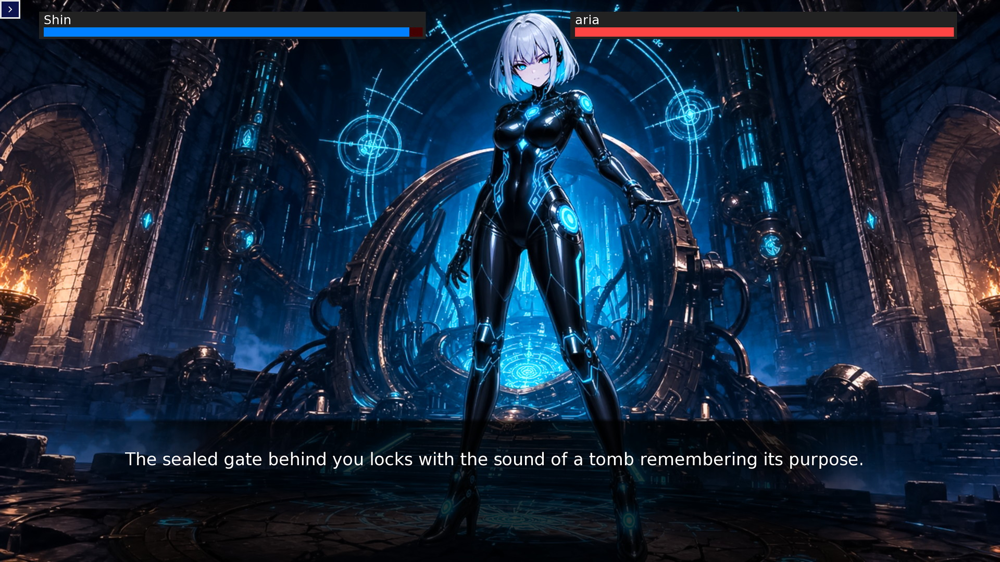
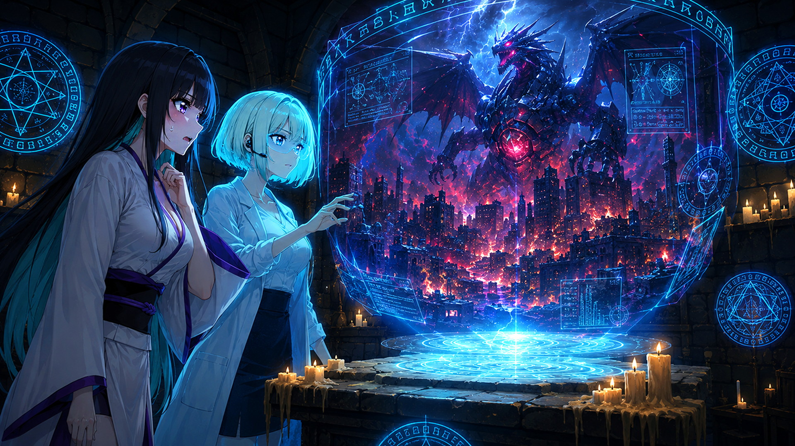
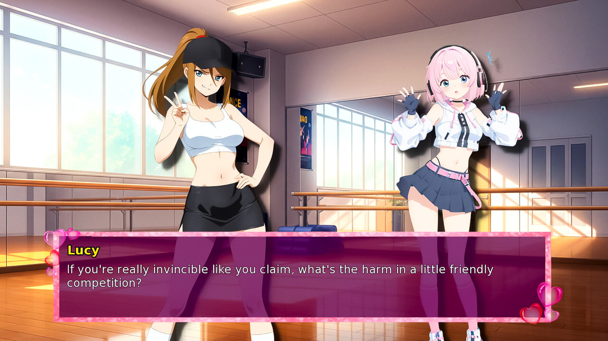
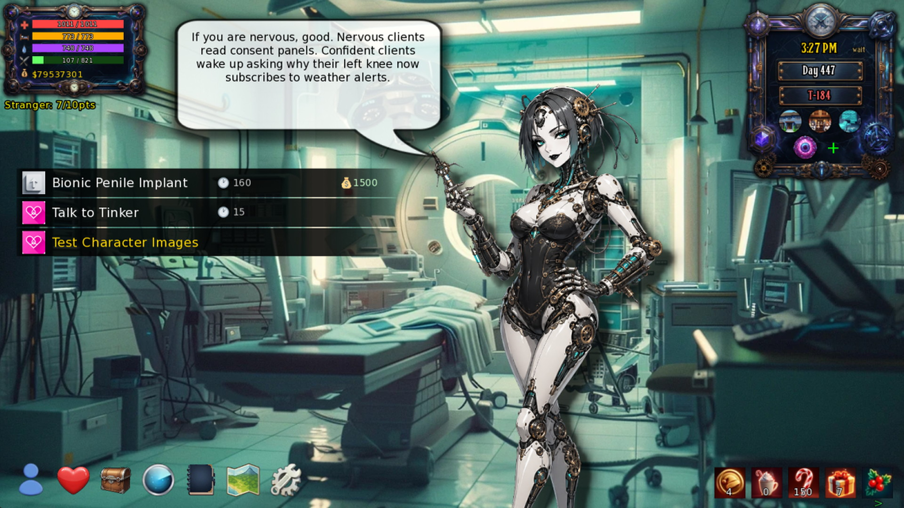
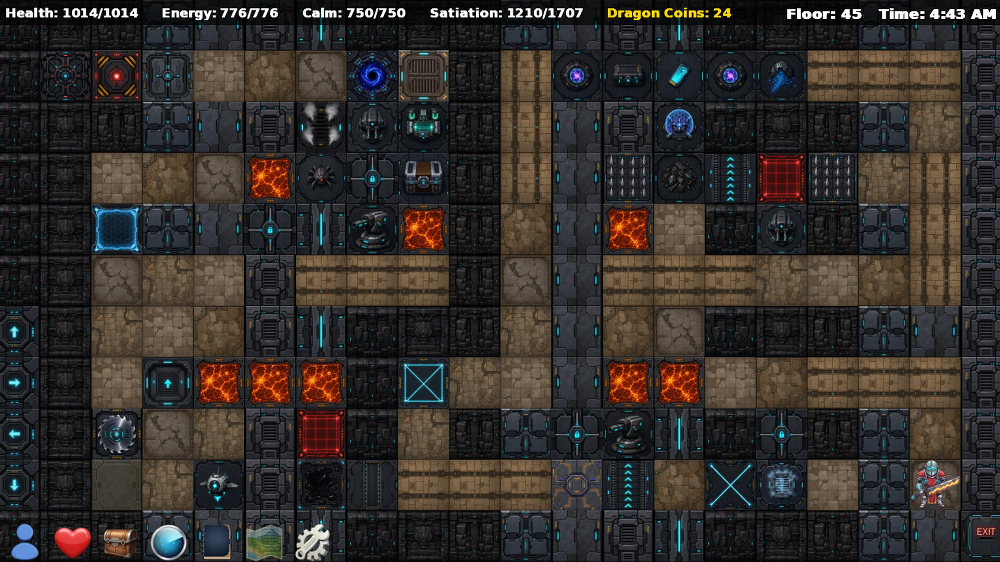

Past
King's Demesne
A kingdom of opportunity and old power
Navigate royal politics, rival guilds, taverns, trade, romance, and an infinity dungeon whose depths keep changing.


The central conflict
You can cross centuries in an instant. The people you meet cannot—and every change you make becomes part of the world they must live in.
A second chance is still a choice—and choices still have a cost.
The Chronoromancer begins with an impossible freedom: move between eras, learn what others cannot know, and intervene before disasters happen. That freedom soon becomes responsibility.
A force known as the VOID is pressing against the timeline. Survival may depend on alliances formed centuries apart, businesses built from nothing, promises kept, and people you choose not to abandon.
The timeline
Each era has its own conflicts and routines, but none exists in isolation.
Navigate royal politics, rival guilds, taverns, trade, romance, and an infinity dungeon whose depths keep changing.

Build friendships, work, make music, compete, manage nightlife, and notice the small moments that define what the future should preserve.

Meet synthetic people, investigators, scientists, and survivors living with technologies that can save the world—or make its final mistake permanent.


How the story is played
The main story gives the timeline direction, but your days remain open. Explore, earn money, improve skills, pursue personal stories, or prepare for the next expedition at your own pace.